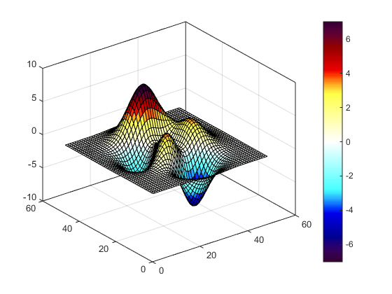
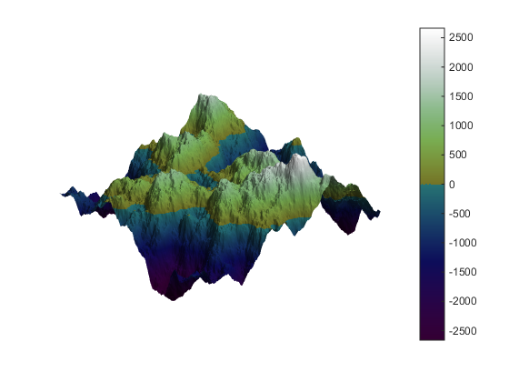
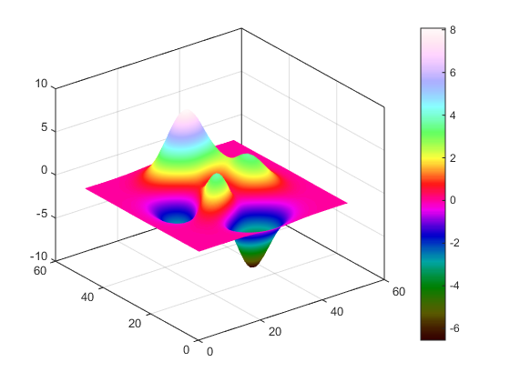
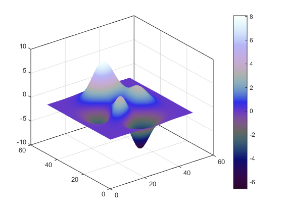
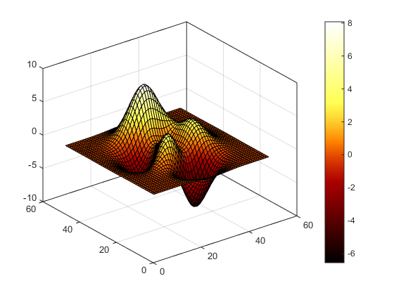
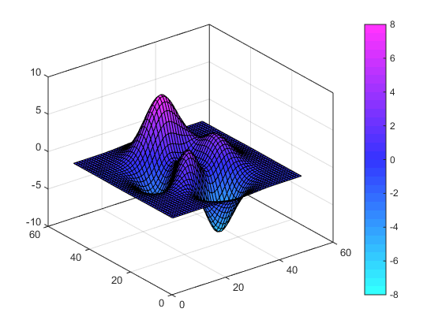
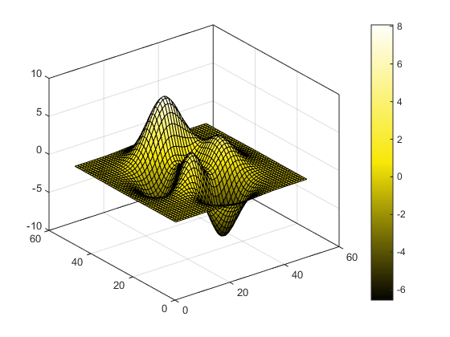
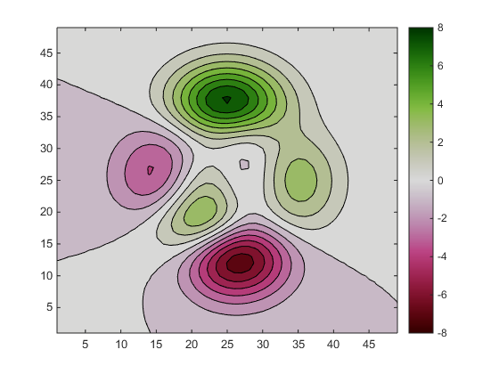

Contents
HSLCOLORMAP DEMO
hslcolormap is a tool that helps you create nice looking colormaps in hue-saturation-lightness space. You can use this to create colormaps that have a progressive change in lightness.
close all
A Negative to positive divergent colormap
[cool shades]-[white]-[warm shades]
surf(peaks); caxis([-7 7]) S=1; %fully saturated L=[.1 1 .1]; %dark-white-dark hslcolormap('mbbccc.YYYRRm',S,L) %magenta-blue-cyan / yellow-red-magenta colorbar
Simple landscape colormap
first make a random landscape:
[X,Y]=meshgrid(-299:300); Z=abs(ifft2(ifftshift((hypot(Y,X)+1e-5).^(-2.1).*exp(rand(size(X))*2i*pi)))); %example terrain inspired by rafael.pinto Z=(Z-Z(300,300))*1000/std(Z(:)); surf(Z) material dull camlight shading interp camorbit(3,2,4) caxis([-1 1]*max(caxis)) axis off %Then make water blue and land green hslcolormap('mc.yc',[1 0],[.1 .3 1]) colorbar
Double rainbow
A not very pretty colormap, but it is makes it easy to relate a color on the plot to a specific value on the colorbar.
Warning: rainbow colormaps are hard to read for color blind, however the steady progression in lightness helps.
surf(peaks); shading interp H=[0 2]; %hues automatically wrap around the color circle S=1; L=[.1 .99]; %dark-bright hslcolormap(H,S,L) colorbar
Tripled hue gradient
Construct a colormap that runs 3 times through a short hue gradient Hide discontinuities with gray, and progressively brighten
surf(peaks); shading interp H='mc.mc.mc'; % 3 x magneta-cyan S=[1 1 0 1 0 1 1]*.8; L=[.1 .99]; %dark-bright hslcolormap(H,S,L) colorbar
Hot
somewhat similar to matlab's own hot colormap
surf(peaks); H='rryy' %red-red-yellow-yellow. S=1; L=[0 1]; % hslcolormap(H,S,L) colorbar
H = rryy
Cold
A variation that is similar to matlab's cool colormap but with stronger variation in lightness.
discrete number of steps
surf(peaks); H='cm'; %cyan-magenta caxis([-8 8]) hslcolormap(32,H,1,.6) colorbar
Random single hue colormap
surf(peaks); H=rand; S=rand*.5+.5; L=[.01 .99]; hslcolormap(H,S,L) colorbar
Divergent with gray in middle
contourf(peaks,-8:8);
H='Rm.yg';
S=[1 0 1];
L=[.1 .85 .1];
caxis([-8 8])
hslcolormap(H,S,L)
colorbar
